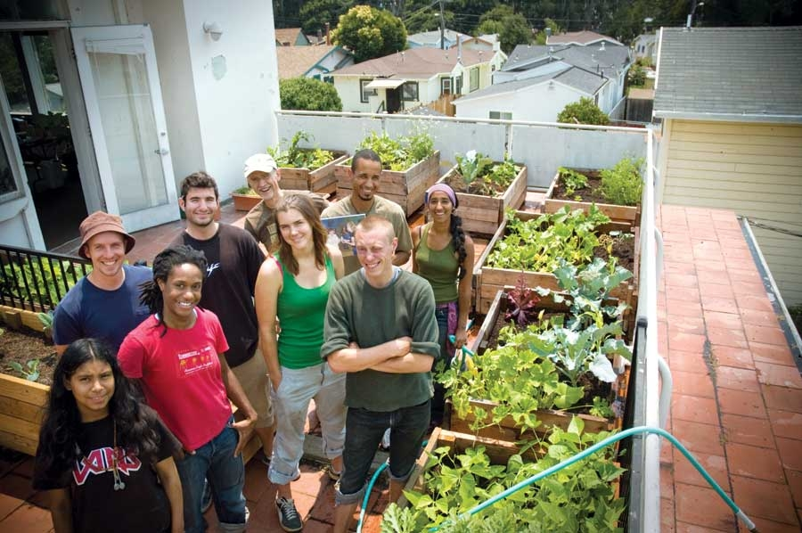
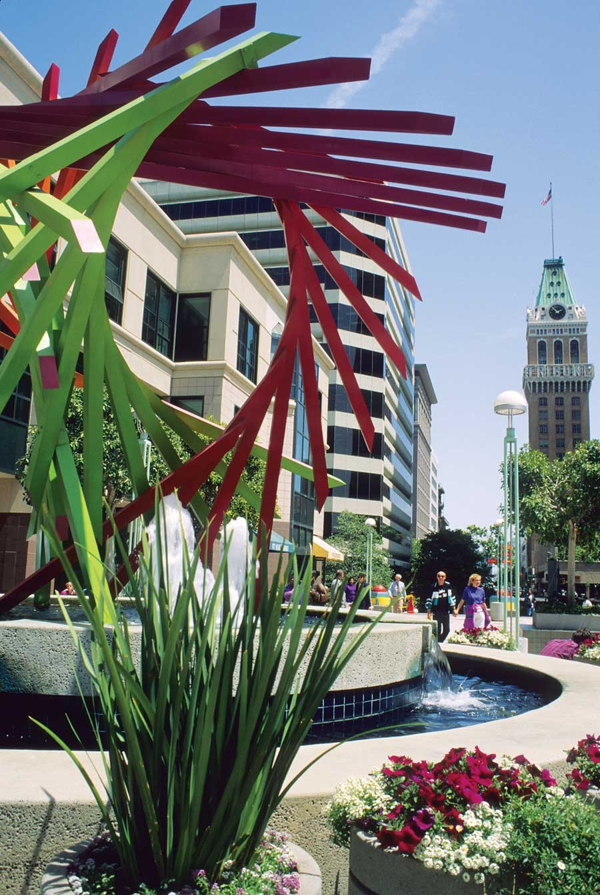

Odds are Oakland, Calif., doesn’t qualify as a place you’ve never heard of - but the Oakland you have heard of is a mere shadow of the real thing. It would take more space than we have in 2009’s list of 11 Great Places You’ve (Maybe) Never Heard Of to discuss why the city’s crime rate attracts so much more media attention than, say, the thousands of people who show up every year for the Oakland Black Cowboy Parade and Festival, which honors the black cowpokes that once roamed the west. There are several other bright spots in this big city that make it a great place.
Exhibit A is the organization Bay Localize. The group has launched a variety of successful programs designed to build local economic and environmental self-reliance. For example, the Use Your Roof! program provides resources to promote living roofs, rooftop gardens, rainwater catchment systems and solar arrays.
In one living roof pilot program, explains director Kirsten Schwind, the organization hired engineers and GIS mappers, and corralled volunteers to grow food and install solar panels. “We got some pretty interesting results,” she says. “The gardens produced enough leafy green vegetables to meet the whole neighborhood’s daily recommended allowance, and the solar provided about 25 percent of the area’s electricity demand, not accounting for efficiency conservation.”
Exhibit B is the Black Dot Artists’ Collective, an organization headed by spoken word/hip-hop artist Marcel Diallo. Concerned not only with aesthetics but also with activism, Black Dot is part of an effort to create a black cultural district, which so far consists of a club, cafe, art gallery and organic grocery store, and offers home-ownership and business start-up assistance programs.
More recently, a handful of underground galleries in the city have organized the Oakland Art Murmur, a monthly art crawl that features street vendors and musicians along with galleries and warehouses that feature underground art.
Population: 397,067
Median Household Income: $40,055
Weather: Temperate, northwest/Pacific Ocean climate with foggy mornings, dry, warm summers and cool, wet winters.
What Makes It Great: Hip-hop culture, art-world hipsters, social justice and environmental initiatives combine for an interesting mix.
|
 DAVID HANKS “Use Your Roof” program participants encourage self-reliance in Oakland, Calif. |
 GIBSON STOCK PHOTOGRAPHY Oakland, Calif., has increased its focus on sustainability and cultural values. |
|